Project two · Printing
Walkway
A Japanese garden boardwalk along the back glass: boards running lengthwise, square posts, two round rails. It's 1:48 scale, which makes the walk about 5 feet wide and anyone fishing from it an inch and a half tall. There's a landing in the middle and a bathhouse where it reaches the corner.
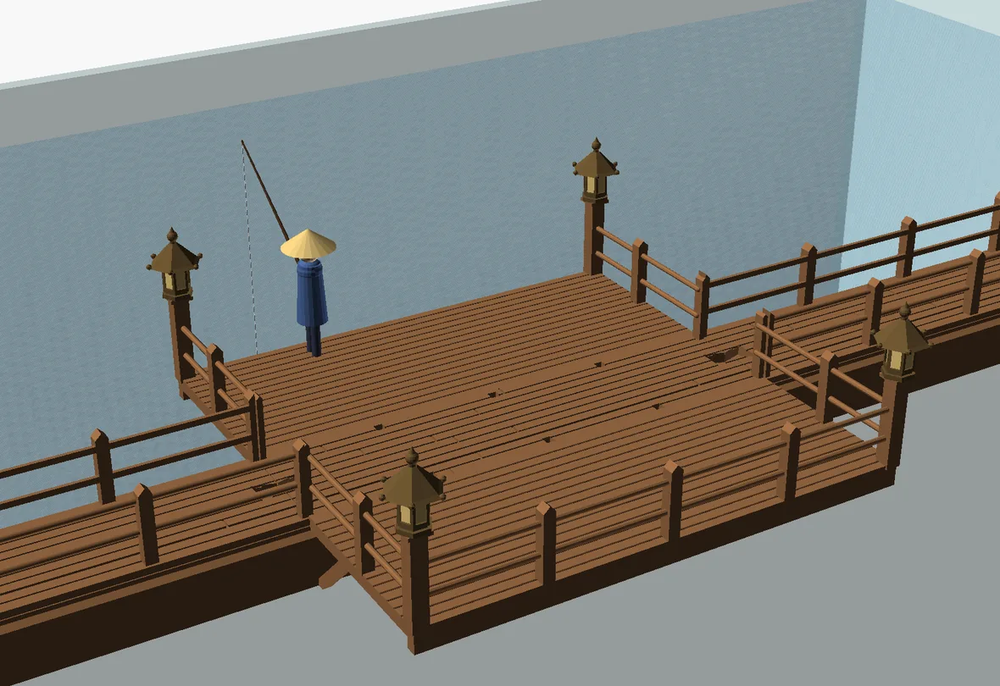
The boardwalkThe centre landingThe bathhouseThe catFiles
2 November
The boardwalk
I started with a corner, on the theory that it would be the most stable piece to get right first. It printed overnight.
Every segment clamps onto the glass by itself, using the same 8.4 mm slot as the risers. A chigiri, a bow-tie key, drops into half pockets across each joint and locks neighbours together with their decks flush. I asked for no gaps in the railing, so every joint has a post standing on it: each railing panel ends in half a post, and two halves meet to make a whole one.
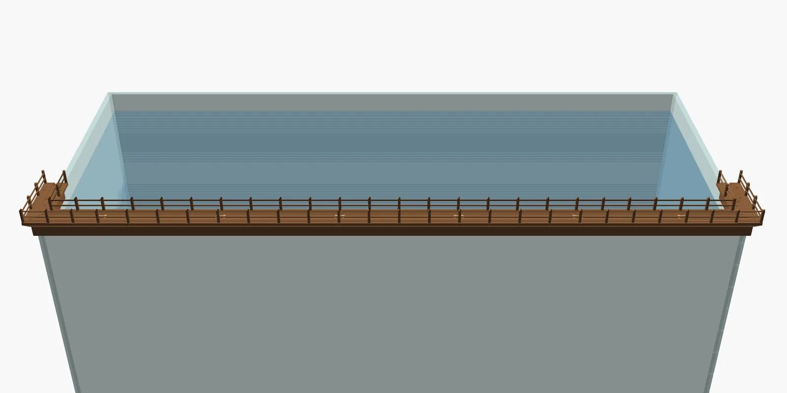
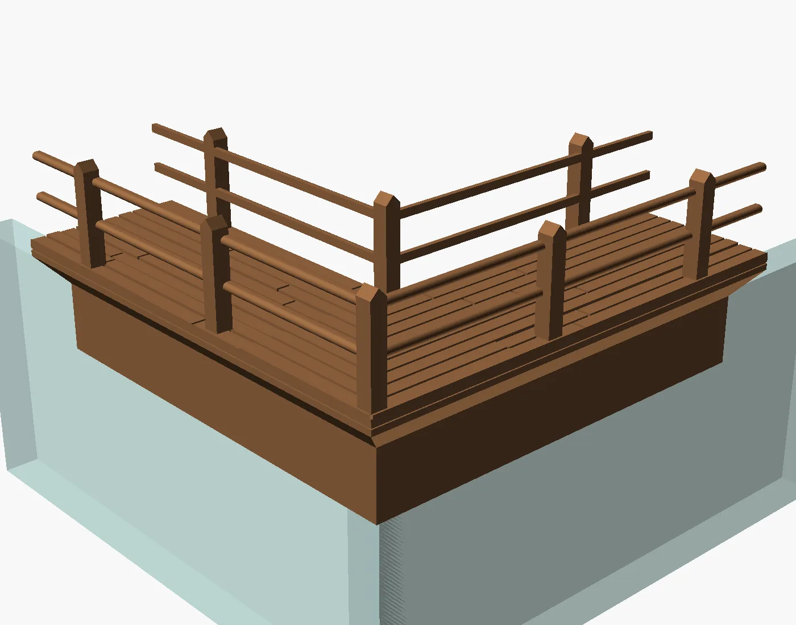
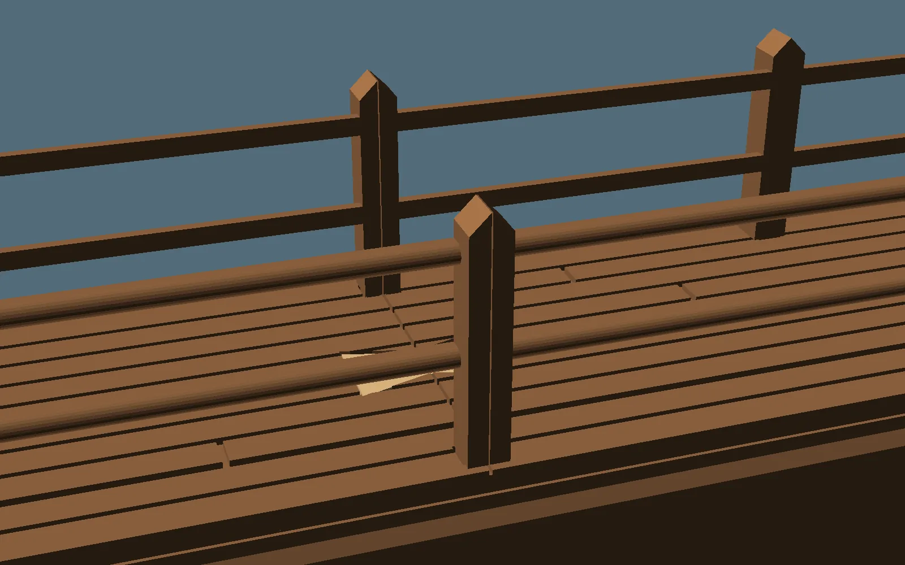
The railings print flat on their inner face, so the long rails never have to bridge thin air. Each post ends in a square peg that presses into the deck, and both sides use the same part, turned round.
3 to 5 November
The centre landing
A plain filler piece in the middle looked dull, so there were three ideas for something better: a drum bridge, a torii gate, or a fishing landing. The landing won. Then I asked for it bigger, and for something on the room side to keep things even, so it grew a matching balcony and became a T across the glass with a bronze lantern on each outer corner. Its weight sits within 1/32 inch of the middle of the glass, so it doesn't lean either way.
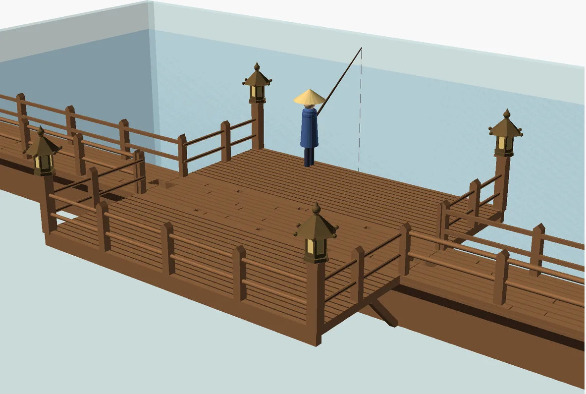
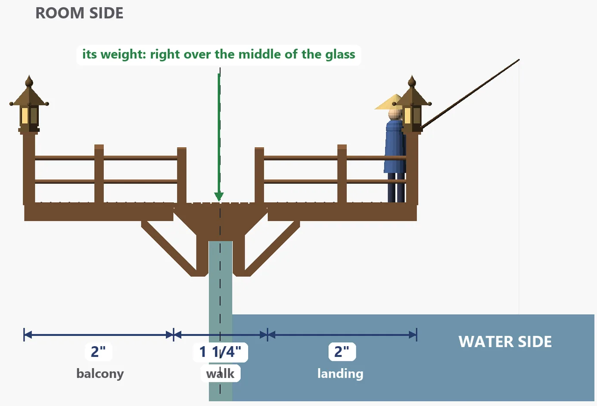
The T prints upside down in one piece, standing on its walk surface, so the clamp and the braces all rise at 45 degrees or steeper. That's where it went wrong the first time. The thin knee braces had to climb on their own, like sticks, and they snapped off halfway through the print. Braces twice as thick fixed it.
The first good one rocked a little on the glass, so its clamp teeth went from ½ inch to 1 inch, the same as the riser's, and the reprint sits better. The lanterns came out loose on their pegs, so they're off for now.
3 to 7 November
The bathhouse
The walk ends in the back-left corner at a bathhouse: crimson walls, green roofs, a golden gable, lattice window boxes, and a leaning chimney with pipes. It's inspired by the bathhouses in Miyazaki's films and by real Japanese onsen, and designed from scratch. It stands 7½ inches above the glass and it took thirteen versions.
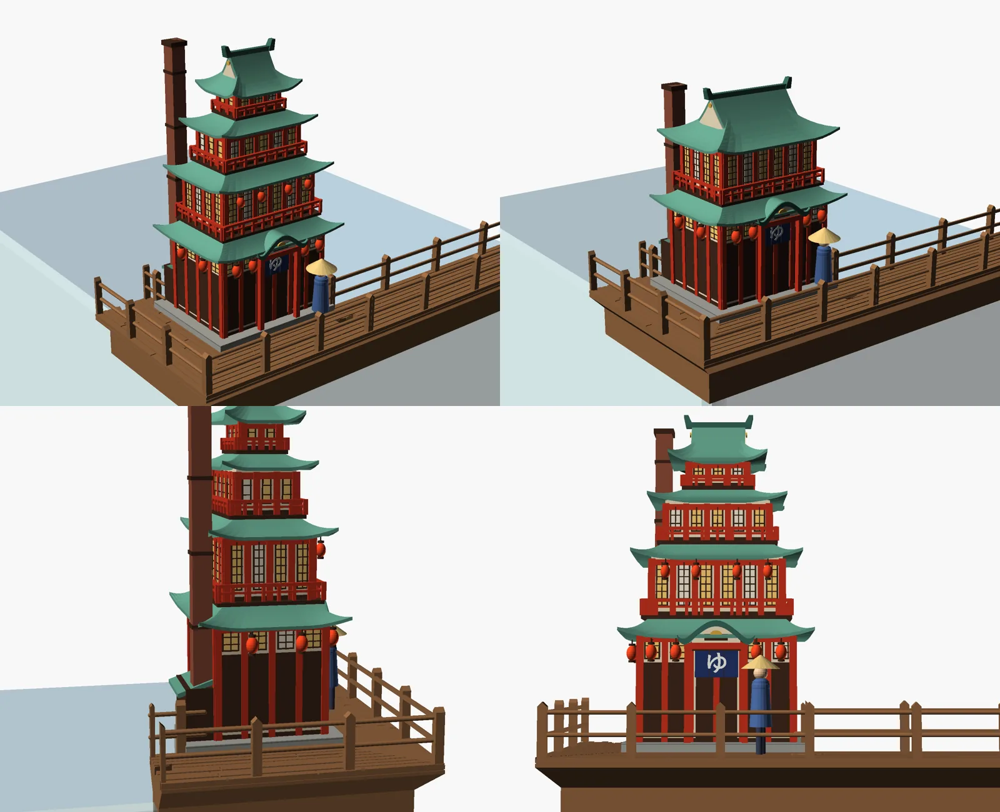
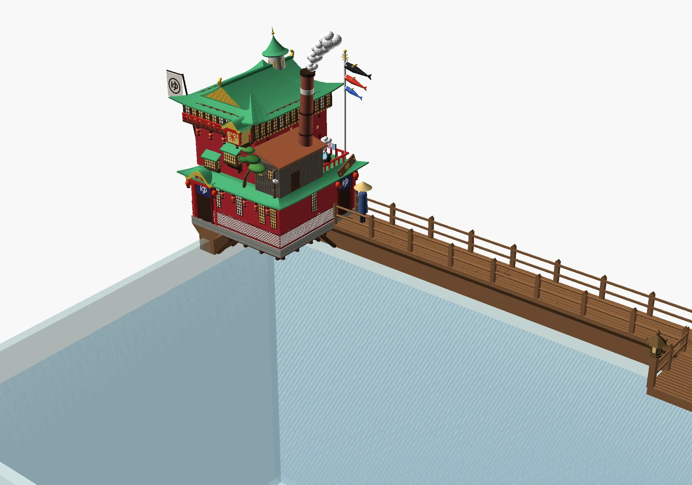
From there it was mostly me taking things away. Out went a cat, a tub and the smoke, then the plants and the towels, then a turret and a star window. A carp streamer on a pole went too, once it was clear its thin tails would snap. What stayed got sturdier.
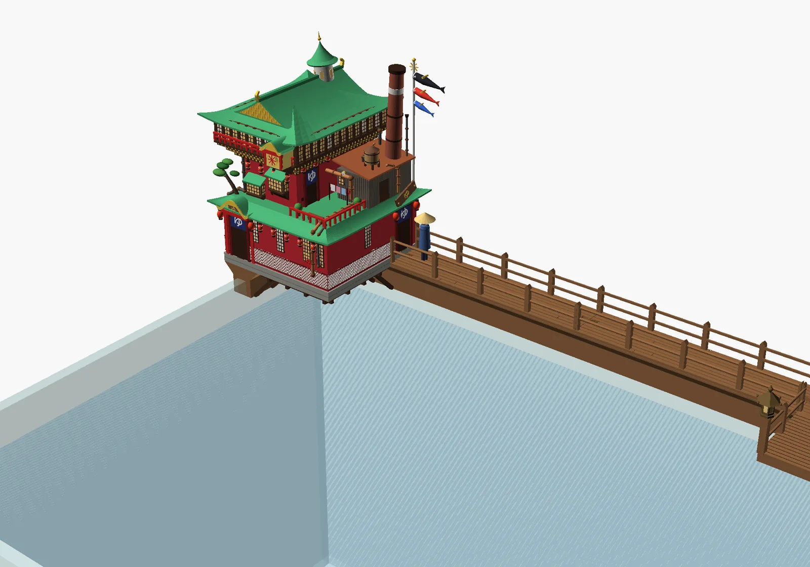
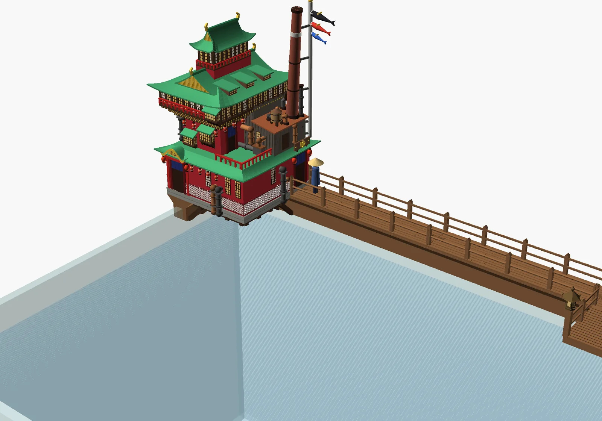
Versions 8 to 10 light it from inside. A small puck light slides in through an opening in the back, the windows became open grids, and the light shines up through hollow floors into the top tier. By version 11 I'd decided I would rather have fewer pipes and a cleaner print, so only the few that matter stayed. Version 12 was a hunt for every place a wall poked through a roof.

Version 13 is the same building, cut up for the printer into seven parts: a base that clamps both panes of glass, the ground floor, the middle storeys, the roofs, the top tier, a guide for the puck light, and the chimney. Walls join with tongue-and-groove joints, the chimney drops onto a peg, and every underside was reshaped to 45 degrees so that nothing needs supports.
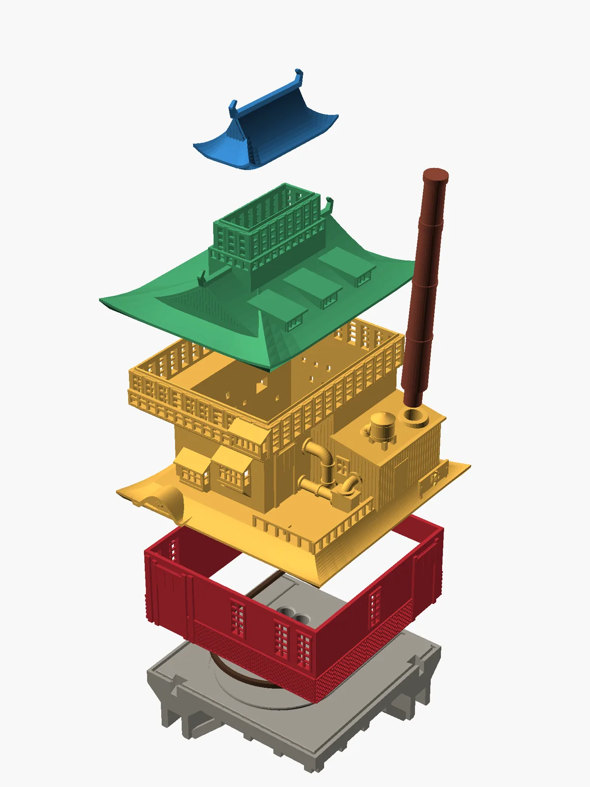
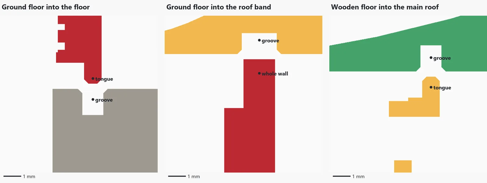
The four plates printed on 6 and 7 November: the base (4 h 44 m), the ground floor upside down on its top edge (1 h 38 m), the middle (5 h 17 m), and the roofs, top tier, guide and chimney together (3 h 05 m). About 14¾ hours and 276 g of PETG in all. Putting it together is next.
In progress
A cat for the landing
The landing is for fishing, so it needs a fisherman. I asked for a Japanese cat in a straw hat, sitting on a cushion with both paws on a line that runs out to the floating ring, so he looks like he's fishing while he's really holding the ring in place.
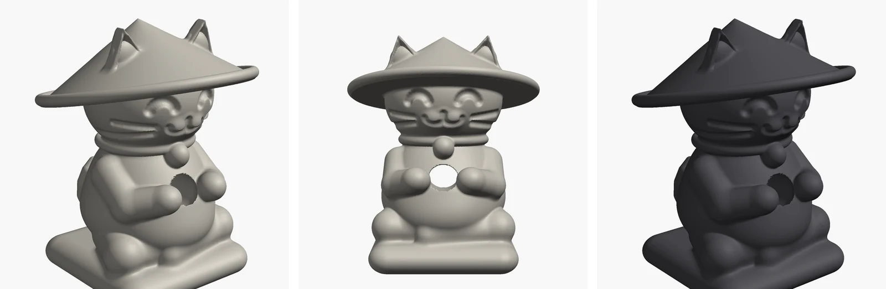
He took sixteen rounds. Built from simple shapes, his arms and legs looked unnatural, so partway through he was rebuilt as one smooth, blended sculpt. My notes got specific: the hat isn't sitting on his head, the ears are way too big, the legs look like blobs.
At 1:48 he printed 15/16 inch tall, and in the hand that was way too small. The next one is nearly three times the size, 2 11/16 inches. His files will go up once he's settled.
Files
Boardwalk and centre landing
| File | What it is | Print time | Plastic |
|---|---|---|---|
| boardwalk.scad | The model, as OpenSCAD code. part picks corner_plate, plate (a straight), filler_plate, centre_plate, centre_rails_plate, lantern_fit_test or a preview | ||
| boardwalk_corner_petg.gcode.3mf | A corner with its railings and key | 2 h 29 m | 55 g |
| boardwalk_straight_petg.gcode.3mf | One 6″ straight with its railings and key | 2 h 13 m | 51 g |
| boardwalk_filler_petg.gcode.3mf | The plain filler that the landing replaced | 2 h 00 m | 45 g |
| boardwalk_centre_petg.gcode.3mf | The centre T, upside down | 4 h 27 m | 109 g |
| boardwalk_centre_rails_petg.gcode.3mf | The centre railings, no lanterns | 31 m | 8 g |
| boardwalk_lantern_fit_test_petg.gcode.3mf | Lantern peg fit test | 18 m | 3 g |
| boardwalk_corner_plate.stl | STLs for every plate are in this folder |
Bathhouse
| File | What it is | Print time | Plastic |
|---|---|---|---|
| bathhouse.scad | The whole bathhouse, as OpenSCAD code | ||
| bathhouse_parts.scad | The printable split. part picks base, ground, middle, roof, top, guide, chimney, fit, assembly or exploded | ||
| bathhouse_1_base_petg.gcode.3mf | Plate 1: the base | 4 h 44 m | 91 g |
| bathhouse_2_ground_petg.gcode.3mf | Plate 2: the ground floor | 1 h 38 m | 28 g |
| bathhouse_3_middle_petg.gcode.3mf | Plate 3: the middle storeys | 5 h 17 m | 100 g |
| bathhouse_4_roofs_petg.gcode.3mf | Plate 4: roofs, top tier, guide and chimney | 3 h 05 m | 57 g |
| bathhouse_fit_test_petg.gcode.3mf | Joint fit test, four amounts of play | 27 m | 6 g |
| bathhouse_base.stl | STLs for every part are in this folder |
The .gcode.3mf files are sliced for a Bambu Lab A1 mini with a 0.4 mm nozzle and the textured PEI plate, and they play no start or finish tune. For any other printer, slice the STL yourself. Sizes on these pages are in inches; the models themselves are in millimetres.
Every picture on this page is a render made from the model files. Photos of the printed parts on the real tank are on their way.